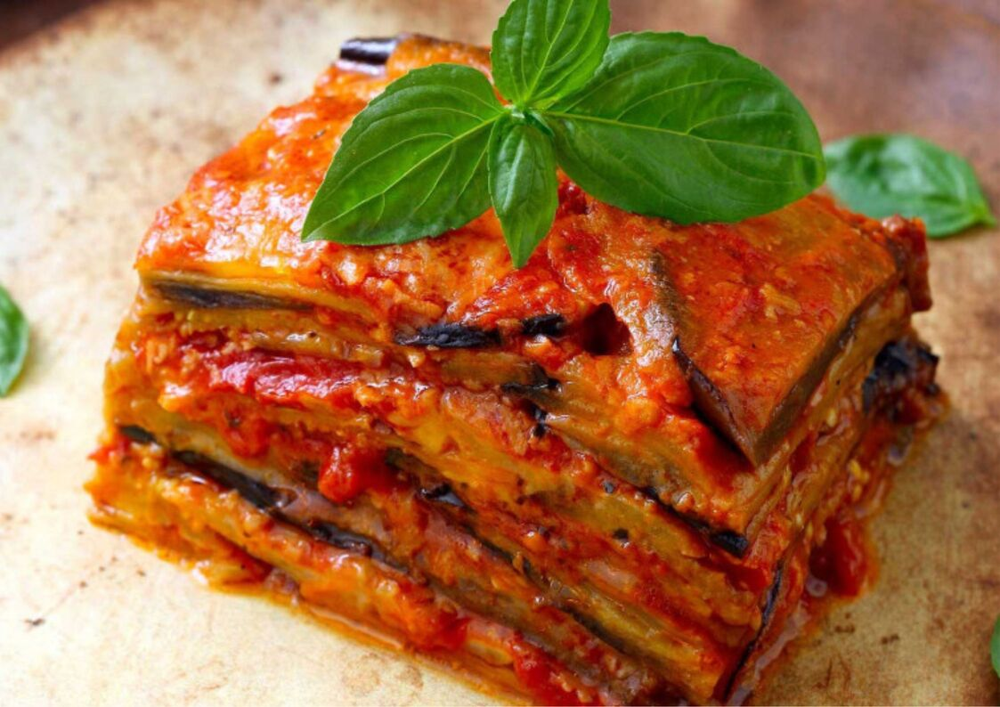

Gastronomía Italiana: Sabores que Encantan al Mundo
Italia es famosa por su gastronomía, una de las más apreciadas a nivel mundial. Sus platos, elaborados con ingredientes frescos y recetas tradicionales, varían según la región. A continuación, te presentamos algunas de las comidas más representativas:
Pizza
Originaria de Nápoles, la pizza es uno de los símbolos más emblemáticos de Italia. La versión más tradicional es la Pizza Margherita, hecha con tomate, mozzarella, albahaca y aceite de oliva, representando los colores de la bandera italiana.
Risotto
Especialmente popular en el norte de Italia, el risotto es un arroz cremoso cocido lentamente con caldo. Destaca el Risotto alla Milanese, que incorpora azafrán para darle su característico color dorado.
Parmigiana di Melanzane
Un plato del sur de Italia a base de berenjenas fritas, salsa de tomate, queso parmesano y mozzarella, horneado hasta obtener una textura gratinada.
Ossobuco alla Milanese
Un guiso de carne de ternera con médula ósea, cocinado con vino blanco, caldo y verduras, servido con gremolata (mezcla de ajo, perejil y limón).
Frittura di Mare
Un plato costero que consiste en mariscos y pescados fritos, como calamares, gambas y anchoas, servidos con limón.
Pasta
Italia cuenta con más de 300 tipos de pasta. Algunos de los platos más populares incluyen:
Spaghetti alla Carbonara (Roma)
Preparado con huevo, queso pecorino, panceta y pimienta negra.
Lasagna alla Bolognese (Bolonia)
Son capas de pasta intercaladas con ragú de carne, bechamel y queso parmesano.
Pasta al Pesto (Génova)
Pasta elaborada con albahaca, ajo, piñones, queso parmesano y aceite de oliva.
Postres Italianos que No Puedes Perderte
Tiramisú
Postre cremoso de capas de bizcocho empapado en café, mascarpone, cacao y licor.
Cannoli
Un postre siciliano hecho con una masa frita en forma de tubo, rellena de ricotta dulce y trozos de chocolate.
Panna Cotta
Flan suave acompañado de caramelo, frutos rojos o chocolate.
Gelato
El famoso helado italiano, cremoso y con sabores intensos.